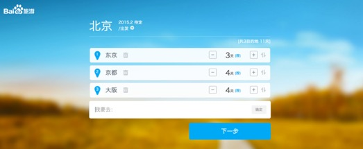
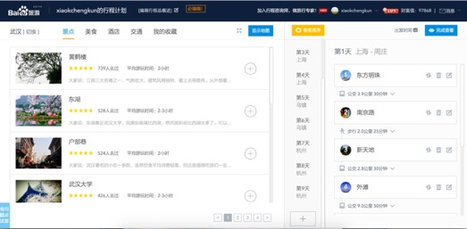

重点项目-行程计划
作为年度重点项目-行程计划-的开发负责人，推动使用AngularJS提供前端开发效率。
作为行程计划项目(http://lvyou.baidu.com/plan )的前端负责人，在项目时间极其紧张的情况下，协调各方面人力，推翻以往的技术架构，首次在用户项目中推行使用AngularJS，大大提高前端开发效率，在短期内完成了极其复杂的前端交互功能。
1.交互动画细腻，Single Page操作，交互复杂但是代码设计清晰。
2.率先使用Web Font以及AngularJS。
3.封装Baidu Map Api和Google Map Api。

